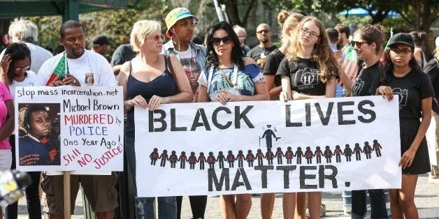
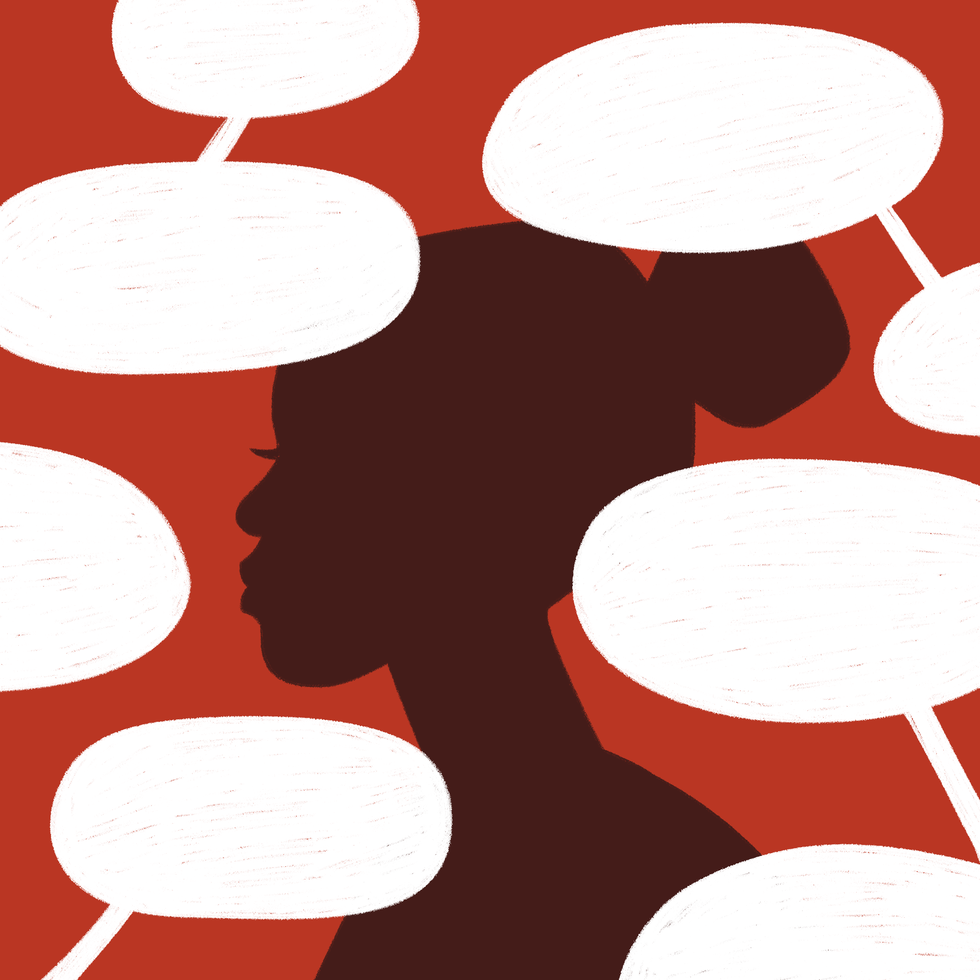
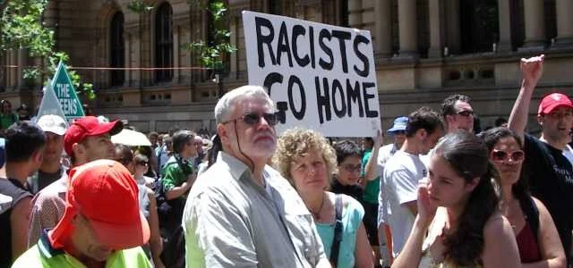

2019-09-26
Either Or Thinking Keeps Us From Experiencing Our True Humanity And Withholds White Supremacy
I am a loving, kind, good intentioned human being. I am a woman, I am a liberal and I am also racist.
It has not been easy to come to terms with this. At first, these characteristics seemed to be diametrically opposed to each other. How could I be all those positive things and also be a racist? The real question became, how could I not be all of those things? Racism and the tenacity of White Supremacy are in the air that I breathe, the stories I’ve been told and the things I see. They are intertwined into every aspect of my life experience. With this understanding, I continue to work toward dismantling my own racism.
White supremacy culture teaches us to think in linear terms or as Robin Diangelo says, “The good bad binary.” However, we are not 2 dimensional beings and, therefore, to expect to exist and live as 2 dimensional is to live in insanity. When we pretend we are 2 dimensional, we lose all the complexity of who we are and forget that we are all imperfectly perfect. I truly believe that to be on an antiracist journey, one must live in the complexity of it all. That is what bringing your full self means to me!
This month, I am sharing some resources that challenged my own linear thinking and the way that distorted view affected how I see myself and the world around me. They have helped me understand, on a very personal level, how racism has impacted my self identify, where these ideas have been harmful (to myself and others) and create a pathway to change.
__________________________________
Articles:

10 Way White Liberals Perpetuate Racism: George Sachs
https://www.huffpost.com/entry/10-ways-white-liberals-pe_b_8068136
I really do have some friends of color who I think would call me a true friend. However, that does not mean that there is not a distance I can sometimes feel between us or that I don’t have a desire for an even deeper connection. Almost all of my friends and colleagues of color have told me in some way that they do not fully trust white people. Some have shared stories of hurt, disappointment and betrayal. The author talks about that gap and gives 10 clear ways in which even us liberal white folks perpetuate racism even when we think we are being “allies” and “true friends.” This article reminded me of the importance of honesty and self awareness. These 10 ways of perpetuating racism are uncomfortable to own, but necessary if we are truly committed to causing less harm.

When feminism is white supremacy in heels:
https://www.harpersbazaar.com/culture/politics/a22717725/what-is-toxic-white-feminism/
I have been following Rachel Elizabeth Cargle for over a year now. Her pieces are straightforward and unapologetic. The title of this article was provoking (not in a good way) but when I read it, I got the message loud and clear. This piece reminded me how deep the rift is between white women and women of color and how much pain white woman have either perpetrated (or remained silent) against our “sisters” of color. I was talking with a friend the other day about the way that white feminists continue to center whiteness and how often the fear of causing harm, paralyzes us. What she said to me was: “we are more concerned about our own discomfort, then the harm we cause.” Ouch, that hit home for me because I see it in myself. Rachel writes about this and goes further by highlighting items in what she calls, “the toxic white feminist handbook.” She ends the article with a piece about allyship and why it’s so hard for most white women to be true allies. Since reading this, I have shared it with many of my consulting clients to cultivate conversations and open pathways for understanding and healing.

I’m not racist and other lies we tell ourselves
https://medium.com/@beckyroe8400/im-not-racist-285abb727d0
This title reminds me of my first Undoing Racism and Community Organizing Workshop (by The People’s Institute for Survival and Beyond). During our first day, our trainers introduced a definition of racism and we talked about who could and couldn’t be racist. Boy did that blow up my self perception! Me, a racist?! How could that be?, I’m a good person, I have black friends (yup, I said it) BUT, once I was able to work past the feelings of shame, and denial, and learn to hold all of the complex pieces of who I am (including a racist), I was able to move into action. I began to self educate, organize, collaborate, disrupt and activate. This article reminds me of Peggy McIntosh’s article, “White Privilege; Unpacking the Invisible Knapsack.” Becky started out the piece by unpacking her own “knapsack of unearned privilege” with very concrete examples. She moves from the individual to the community and writes about how racism shows up in voters registrations rights where she lives. She ends by sharing a few resources including the link to an article called, “6 ways well intentioned people whitesplain racism (and why it needs to stop).”
Short Videos
Embedded media (requires internet): //www.youtube.com/embed/C8xJXKYL8pU?wmode=opaque&enablejsapi=1
Getting called out and how to apologize: Franchesca Ramsey (8.26 minutes)
Are you a white person who is serious about being anti-racist and anti-oppressive? If so, you have no doubt pondered (or stayed paralyzed by) the question, what to do when I get called out or as I often say how to apologize when I F-up. Franchesca Ramsey does a short but powerful video that provides some answers to those questions. In doing so, she shares some of the F-ups she has been called out on and how she apologized. If you don’t already follow her YouTube videos, I strongly recommend that you do.
I have used several of her clips to “break the ice” at workshops and presentations.
Embedded media (requires internet): //www.youtube.com/embed/dw_mRaIHb-M?wmode=opaque&enablejsapi=1
(Fear of a Brown Planet)- Reverse Racism: Aamer Rahman
https://www.youtube.com/watch?v=dw_mRaIHb-M
Aamer Rahman is an Australian stand-up comedian of Bangladeshi descent. He is best known as one half of comedy duo Fear of a Brown Planet, along with Nazeem Hussain. The topic of this video is not funny; however, Aamer is able to humorously explain why there is no such thing as reverse racism. When I first saw this video, I wanted to laugh (which I did) but I also felt the deep anger, rage and dare I say guilt of knowing that the idea of reverse racism is no joke to many people. This comes up again and again when I am doing anti-racist work with groups of white folks and I have found that showing this video is a great segway to moving into a conversation about who can and can’t be racist. The humor makes people less defensive, which in turn makes them more open to the message.
I hope you enjoy these resources and use them well.
There is one more valuable resource I want to share with you before we go…
I will be co-facilitating a workshop from September 28-29th called Shame Resilience Skills for White People: A Pathway to Authentic Conversations With People of Color. My co-facilitator, Dr. Alana Tapin, and I created this workshop because we know from our own experiences that real change and transformation can only happen through compassion. We created this opportunity for white people to learn to be truly accountable by practicing shame resilience.
Please go to the link below for more information and registration. You can contact me directly at: robin.schlenger@gmail.com for scholarship information. I wouldn’t want you to miss this!
Workshop: Shame Resilience Skills for White People
Much love, friends.
See you on the journey!
Robin